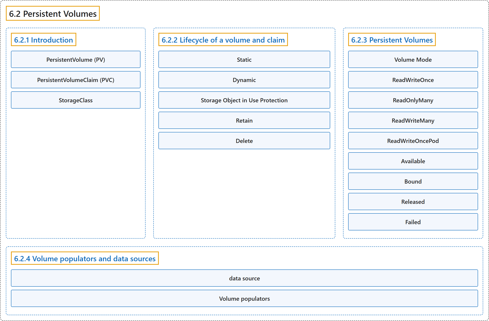

6.2 Persistent Volumes
Classification

Glossary
| Term | Definition | 中文翻译 | Source |
|---|---|---|---|
| 6.2 Persistent Volumes 持久卷 |
(context) "Managing storage is a distinct problem from managing compute instances." | （语境）管理存储是一个与管理计算实例截然不同的问题。 | The Kubernetes Authors, n.d., "Introduction", para. 1 |
| 6.2.1 Introduction 介绍 |
(No definition) | （无定义） | The Kubernetes Authors, n.d., "Introduction" |
| PersistentVolume (PV) PersistentVolume（PV） |
"A PersistentVolume (PV) is a piece of storage in the cluster that has been provisioned by an administrator or dynamically provisioned using Storage Classes." | PersistentVolume（PV）是集群中的一块存储，由管理员供应，或使用存储类动态供应。 | The Kubernetes Authors, n.d., "Introduction", para. 2 |
| PersistentVolumeClaim (PVC) PersistentVolumeClaim（PVC） |
"A PersistentVolumeClaim (PVC) is a request for storage by a user." | PersistentVolumeClaim（PVC）是用户对存储的请求。 | The Kubernetes Authors, n.d., "Introduction", para. 3 |
| StorageClass StorageClass |
(context) "For these needs, there is the StorageClass resource." | （语境）针对这些需求，有 StorageClass 资源。 | The Kubernetes Authors, n.d., "Introduction", para. 4 |
| 6.2.2 Lifecycle of a volume and claim 卷与申领的生命周期 |
"PVs are resources in the cluster." | PV 是集群中的资源。 | The Kubernetes Authors, n.d., "Lifecycle of a volume and claim", para. 1 |
| Static 静态 |
(context) "A cluster administrator creates a number of PVs." | （语境）集群管理员会创建若干 PV。 | The Kubernetes Authors, n.d., "Static", para. 1 |
| Dynamic 动态 |
"When none of the static PVs the administrator created match a user's PersistentVolumeClaim, the cluster may try to dynamically provision a volume specially for the PVC." | 当管理员创建的静态 PV 都不匹配用户的 PersistentVolumeClaim 时，集群可能尝试专门为该 PVC 动态供应一个卷。 | The Kubernetes Authors, n.d., "Dynamic", para. 1 |
| Storage Object in Use Protection 使用中存储对象保护 |
"The purpose of the Storage Object in Use Protection feature is to ensure that PersistentVolumeClaims (PVCs) in active use by a Pod and PersistentVolume (PVs) that are bound to PVCs are not removed from the system" | 使用中存储对象保护功能的目的是确保正被 Pod 使用的 PVC（PersistentVolumeClaim）以及绑定到 PVC 的 PV（PersistentVolume）都不会被从系统中删除 | The Kubernetes Authors, n.d., "Storage Object in Use Protection", para. 1 |
| Retain Retain |
"The Retain reclaim policy allows for manual reclamation of the resource." |
Retain 回收策略允许手动回收资源。 |
The Kubernetes Authors, n.d., "Retain", para. 1 |
| Delete Delete |
"For volume plugins that support the Delete reclaim policy, deletion removes both the PersistentVolume object from Kubernetes, as well as the associated storage asset in the external infrastructure." |
对于支持 Delete 回收策略的卷插件，删除操作会同时移除 Kubernetes 中的 PersistentVolume 对象，以及外部基础设施中关联的存储资产。 |
The Kubernetes Authors, n.d., "Delete", para. 1 |
| 6.2.3 Persistent Volumes 持久卷 |
"Each PV contains a spec and status, which is the specification and status of the volume." | 每个 PV 都包含规约和状态，即卷的规格和状态。 | The Kubernetes Authors, n.d., "Persistent Volumes", para. 1 |
| Volume Mode 卷模式 |
"Kubernetes supports two volumeModes of PersistentVolumes: Filesystem and Block." |
Kubernetes 支持 PersistentVolume 的两种 volumeModes，即 Filesystem 和 Block。 |
The Kubernetes Authors, n.d., "Volume Mode", para. 1 |
| ReadWriteOnce ReadWriteOnce |
"the volume can be mounted as read-write by a single node." | 卷可以以读写方式挂载到单个节点。 | The Kubernetes Authors, n.d., "Access Modes", para. 4 |
| ReadOnlyMany ReadOnlyMany |
"the volume can be mounted as read-only by many nodes." | 卷可以以只读方式挂载到多个节点。 | The Kubernetes Authors, n.d., "Access Modes", para. 6 |
| ReadWriteMany ReadWriteMany |
"the volume can be mounted as read-write by many nodes." | 卷可以以读写方式挂载到多个节点。 | The Kubernetes Authors, n.d., "Access Modes", para. 8 |
| ReadWriteOncePod ReadWriteOncePod |
"the volume can be mounted as read-write by a single Pod." | 卷可以以读写方式挂载到单个 Pod。 | The Kubernetes Authors, n.d., "Access Modes", para. 10 |
| Available Available |
"a free resource that is not yet bound to a claim" | 空闲资源，它尚未绑定到申领 | The Kubernetes Authors, n.d., "Phase", para. 3 |
| Bound Bound |
"the volume is bound to a claim" | 卷已绑定到申领 | The Kubernetes Authors, n.d., "Phase", para. 5 |
| Released Released |
"the claim has been deleted, but the associated storage resource is not yet reclaimed by the cluster" | 申领已被删除，但关联的存储资源尚未被集群回收 | The Kubernetes Authors, n.d., "Phase", para. 7 |
| Failed Failed |
"the volume has failed its (automated) reclamation" | 卷的（自动）回收失败 | The Kubernetes Authors, n.d., "Phase", para. 9 |
| 6.2.4 Volume populators and data sources 卷填充器与数据源 |
(No definition) | （无定义） | The Kubernetes Authors, n.d., "Volume populators and data sources" |
| data source 数据源 |
"Volume cloning and snapshot restore pre-populate a new volume from a built-in data source." | 卷克隆和快照恢复会预先填充来自内置数据源的新卷。 | The Kubernetes Authors, n.d., "Volume populators and data sources", para. 1 |
| Volume populators 卷填充器 |
"Volume populators extend this mechanism so that a PersistentVolumeClaim can be pre-populated from other kinds of source (a custom resource)" | 卷填充器扩展了这一机制，使 PersistentVolumeClaim 可以从其他类型的源（自定义资源）预先填充 | The Kubernetes Authors, n.d., "Volume populators and data sources", para. 1 |
References
The Kubernetes Authors. (n.d.). Persistent Volumes. Kubernetes Documentation. Retrieved October 31, 2026, from https://kubernetes.io/docs/concepts/storage/persistent-volumes/